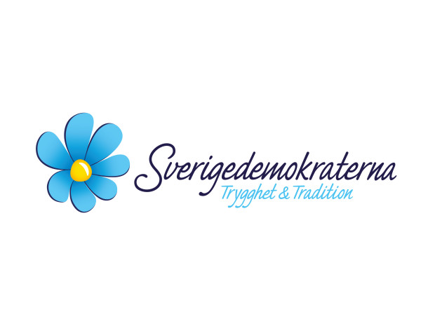

Sverigedemokraterna er det mest omstridte partiet i svensk
politikk,
og lå an til å gjøre det veldig godt dette valget.
Forskjellen mellom SD og de andre partiene er deres villighet til å snakke
om flyktningkrisen Sverige undergår. Sverige er et svært anti-nasjonalistisk
land
og det å snakke om etnisitet og tilhørlighet er tabubelagt.
